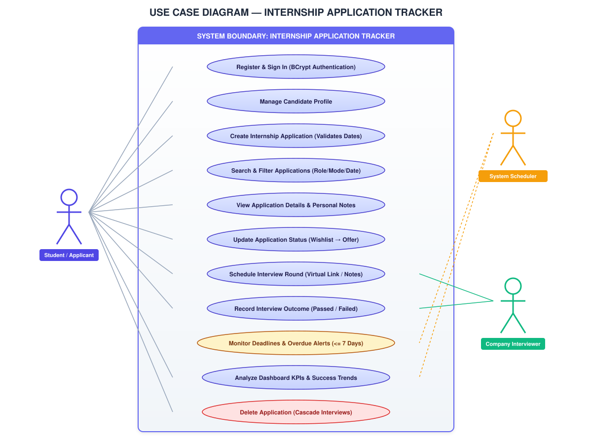

Internship Application Tracker — UML Diagrams
High-Definition Visual Diagrams & Native StarUML (.mdj) Models
Open Master StarUML (.mdj)
Download Project ZIP
Use Case
Class Diagram
State Diagram
Activity Diagram
Sequence Diagram
Collaboration
Component Diagram

Tip: You can right-click on any diagram above and select
"Save image as..."
or
"Open image in new tab"
to export or zoom!